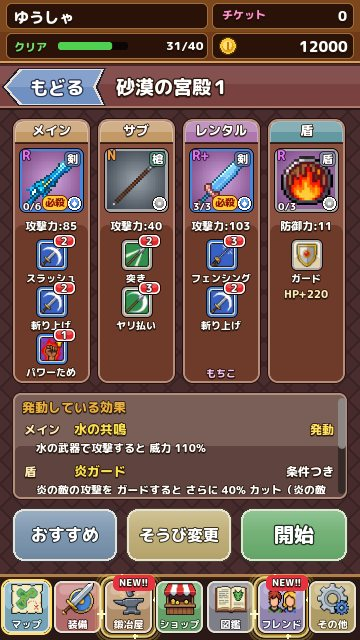

はじめての冒険ガイド
「キシドラ！」を始めたばかりの人向けに、最初の 1 時間でやることを順番にまとめました。 更新：2026-11-13
まずは王さまの話を聞こう
ゲームを始めると、お城で王さまが主人公を呼び出します。世界を守ってきた 4 つの宝玉がなくなってしまったので、取りもどしてほしい、というのが冒険のはじまりです。主人公の名前はこのときに決めます。ひらがな・カタカナで 6 文字まで、あとから変えることはできないので、気に入った名前をつけてあげてください。
話が終わると、世界地図の画面になります。地図の上の光っている場所が、いま行ける場所です。最初はお城のまわりだけですが、エリアの最後の STAGE をクリアするたびに、次の場所への道がのびていきます。

チュートリアルで戦い方を覚える
地図のいちばん上にある「チュートリアル」では、おけいこ用の相手と 3 つの練習ができます。
- 攻撃：スキルの札をタップして攻撃する練習。ST（スタミナ）の使い方も覚えます
- 防御：敵の攻撃に合わせてガードボタンを押す練習。このゲームでいちばん大事な操作です
- 必殺技：決まった順番でスキルをつなげて、必殺技を出す練習
チュートリアルを全部終えると、ごほうびの武器がもらえます。飛ばすこともできますが、ガードのタイミングはここで体に覚えさせておくと、あとがぐっと楽になります。
最初のエリアの進め方
エリアは 5 つの STAGE でできていて、STAGE 4 には中ボス、STAGE 5 にはそのエリアのボスが待っています。STAGE は順番に開くので、まずは STAGE 1 から進めましょう。
STAGE を選ぶと「詳細」で出てくる敵と、初めてクリアしたときにもらえる品を確かめられます。出発前の確認画面には「おすすめ装備」のボタンがあり、押すとその STAGE の敵の弱点に合わせて、持っている武器から組み合わせを選んでくれます。迷ったらまず押してみてください。

負けてしまったら
HP が 0 になると負けですが、持ち物やコインがなくなることはありません。負けたときは、次の 3 つを見直すのがおすすめです。
- 敵の弱点に合う武器を持っているか（敵を長押しすると弱点が出ます）
- 盾の DEF（防御力）が低すぎないか
- ガードのタイミングが早すぎないか。どうしても難しいときは、「その他」から難易度を下げられます
同じ STAGE を何度か遊ぶと、宝箱から新しい武器が出ることもあります。少し前の STAGE で装備を集めてから、もう一度挑むのも立派な作戦です。
最初に覚えておきたいこと
- 記録は自動で残ります。STAGE の途中でやめても、地図からやり直せます
- 持ち物は 999 個まで持てます。いらない装備は鍛冶屋やショップで売るとコインになります
- 地図の下の欄から、装備・鍛冶屋・ショップ・フレンド・その他の画面へ行けます
- 新しいお店や機能が使えるようになると、欄のアイコンが光って「NEW」の印がつきます
1 日目のおすすめの流れ
- 王さまの話を聞いて、チュートリアルを 3 つとも終える
- アーケディア城の STAGE を 1 から順に進め、ボスまで倒す
- 平原の村でショップと鍛冶屋が使えるようになったら、コインでガチャを何回か引く
- 手に入った武器を装備の画面で見比べ、攻撃力の高いものと、スキルのつながりがよいものをメインとサブに入れる
- 平原の村の STAGE を進めながら、勝てなくなったら一つ前の STAGE で装備を集め直す
序盤は敵の数も少なく、ガードを何度か失敗しても負けにくいように作ってあります。あせらずに「!!」を見てから押す練習を重ねていくと、中盤以降の強い敵にも対応できるようになります。